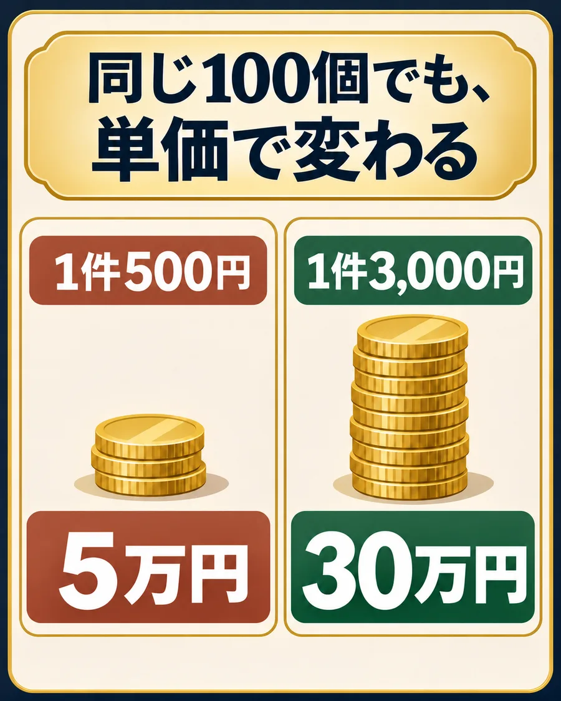
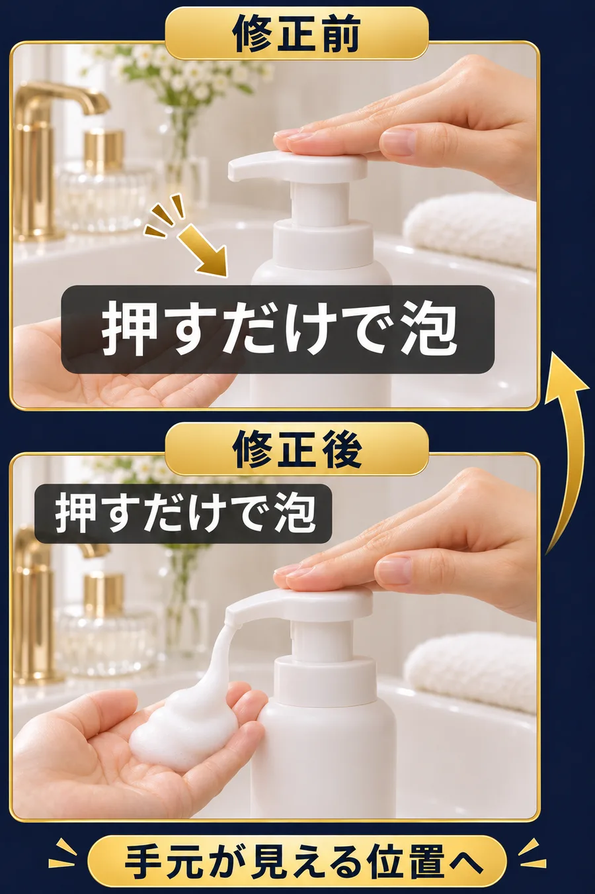
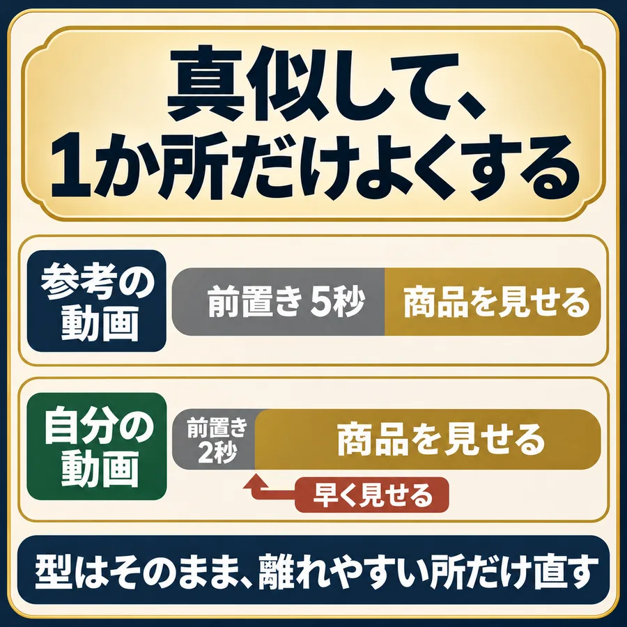
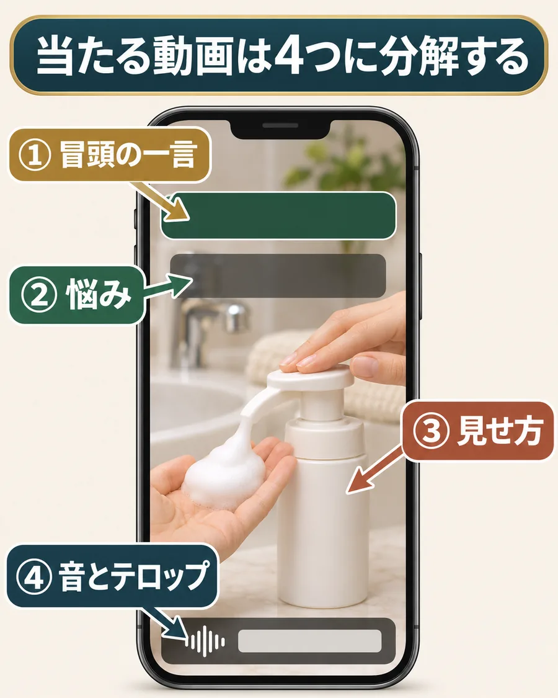

月113万の正体は、「単価」と「真似し方」。
AIアフィで結果を出した実績者の話です。始める前は、まったく稼げていなかったんですよね。
たとえば、占いアプリやマッチングアプリの紹介。1件の紹介料が低く、続けても稼げなかった。
開始3か月目に、月の利益113万円。会社員は続けたまま、仕事のあとに動画を作っていた。
当たった動画は、ほんの数本。その数本がずっと見られ続けて、売上を積み上げていったんです。
変えたのは2つだけ。1件の単価と、真似し方です。
この2つは、今日から自分の動画にそのまま持ち込めます。
113万円は実績者の数字で、僕の実績（3か月で124万円）とは別の人の話です。
極意1 同じ1本でも、単価で桁が変わる。
以前のような1件500円と、高単価の1件3,000円。同じ動画から100個売れたら、ここまで変わります。

実績者が稼いだのも、当たった数本の動画でした。当たりが少なくても、1件が高ければ、その数本がそのまま大きな収益になるんです。
だから、どう作るかより先に、何を紹介するかを決める。これが1つ目の極意です。
高単価の案件は、お試し価格で始めて続けて買ってもらう、美容の商品に多いです。
極意2 当たる動画を「なぜ」まで真似る。
AIアフィの基本は、TTP（徹底的にパクる）。最初は、テロップの位置や大きさまで、そのまま真似して大丈夫です。
ただ、僕が本当に大事だと思うのは、「なんでこういう作りなのか」まで真似ること。形だけだと、商品が変わったときに応用がきかないんです。
例1 テロップの「位置」ではなく「理由」を真似る

参考のテロップがそこにあったのは、「見せたいものを隠さないため」。理由まで真似れば、自分の映像でも隠さない場所へ動かせます。
例2 真似して、直す（TTPS）

真似した上で、1か所だけよくする。これをTTPS（Sは進化）と呼んでいます。
例3 商品を変えたら、「売り」も変える
洗顔料なら「泡立て不要」、ミストなら「メイクの上から使える」。商品が変われば、言うべき売りも変わります。
商品ページの売りは、販売元が「これが刺さる」と考えた言葉。まずそこを読んでから作ります。
どの動画を真似るか。3つの探し方。
- 1｜伸び始めを、2番手・3番手で
ここ1週間で伸び始めた動画を見つけたら、すぐ作る。同じ型が10本並ぶころには、もう見飽きられています。初めての人はここから。
- 2｜廃れた型を、別の商品で
一度流行って、みんなが離れた型を、まだ誰もやっていない商品で出し直す。
- 3｜別ジャンルの型を掛け合わせる
ほかのジャンルで伸びている構成や音を、美容の商品紹介に持ってくる。これは慣れてからで大丈夫です。
最初の1本は、この順番で選ぶ
- TikTokで商品名を検索する。
紹介したい商品の名前で、紹介動画を出します。 - 新しいのに伸びている動画を探す。
投稿から日が浅いのに、ほかより再生やいいねが多いもの。 - 自分でも撮れる1本に決める。
手元や商品の見せ方を、自分の商品でそのまま撮れるかで選びます。
選べたら、次の4つに分けて「なぜ当たったか」を見ていきます。
真似する前に、4つに分解する

- 冒頭の一言：最初の1〜2秒で、誰の手を止めている？
- 悩み：誰の、どんな困りごとに答えている？
- 見せ方：商品のどこを、どの順番で見せている？
- 音とテロップ：どこで切り替わり、何を隠さずに見せている？
真似するのは型（順番・見せ方・テンポ）です。他人の映像・音声・セリフをそのまま使うのはNG。商品は自分で撮ります。
当たっている動画を一本、分解する
公開前に見る3点
- 型は真似ても、映像・音声・セリフは自分のものか。
- 話している内容が、商品ページの内容と合っているか。
- 自分の紹介リンクを開くと、紹介した商品が出るか。
当たっている動画を一本選んで、「なぜ当たったか」を4つに分けて書けたらOK。次は、その型で一本作ってみてください。